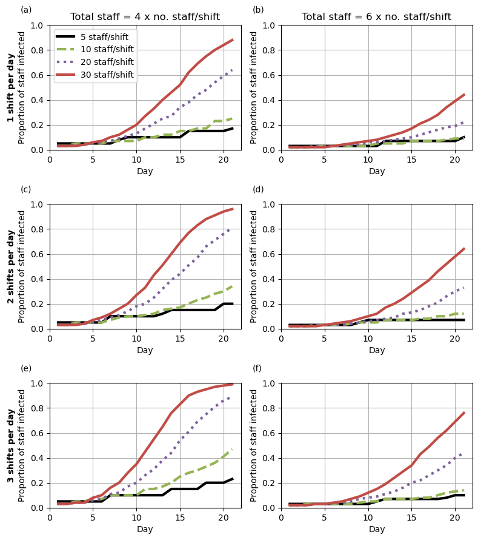
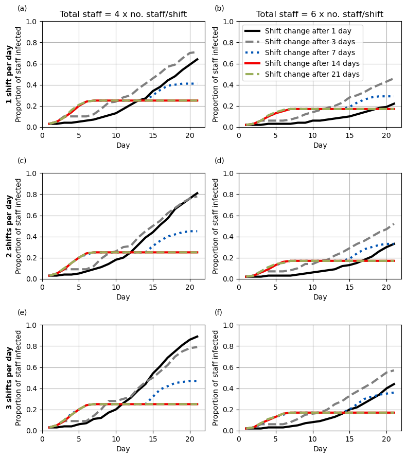
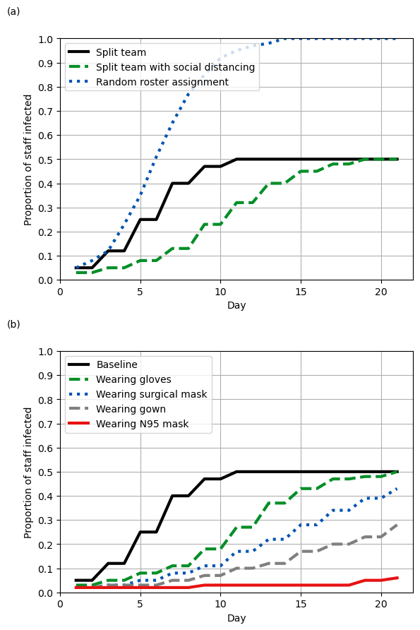

# Import model
import model
# Data processing and figure generation
import pandas as pd
import matplotlib.pyplot as plt
import numpy as np
# Manage file paths
from dataclasses import dataclass
import os
# Hide warnings that appear
import warnings
from pandas.core.common import SettingWithCopyWarning
warnings.simplefilter(action='ignore', category=SettingWithCopyWarning)
warnings.filterwarnings('ignore')
# To record runtime of this notebook
import timeReproduction
This notebook reproduces all the results from:
Lim CY, Bohn MK, Lippi G, Ferrari M, Loh TP, Yuen K, Adeli K, Horvath AR Staff Rostering, Split Team Arrangement, Social Distancing (Physical Distancing) and Use of Personal Protective Equipment to Minimize Risk of Workplace Transmission During the COVID-19 Pandemic: A Simulation Study. Clinical Biochemistry 86:15-22 (2020). https://doi.org/10.1016/j.clinbiochem.2020.09.003.
If running all scenarios from scratch, the total run time for this notebook is 49 minutes and 17 seconds. This time was from reproduction on an Intel Core i7-12700H with 32GB RAM running Ubuntu 22.04.4 Linux.
The individual run times for each scenario were: * Base (15% probability of secondary infection) - 7m 29s * Base with 5% probability of secondary infection - 5m 49s * Base with 30% probability of secondary infection - 8m 38s * Random shift assignment - 1m 45s * Protective measures: social distancing - 5m 21s * Protective measures: gloves - 5m 20s * Protective measures: surgical mask - 5m 5s * Protective measures: gown - 4m 51s * Protective measures: N95 mask - 4m 54s
Set-up
Import required packages
Set file paths
@dataclass(frozen=True)
class Paths:
'''Singleton object for storing paths to data and database.'''
outputs = '../outputs'
base_5 = 'output_base5.csv'
base_15 = 'output_base15.csv'
base_30 = 'output_base30.csv'
no_rest = 'output_base15_norest.csv'
contact_half = 'output_base15_contact20.csv'
gloves = 'output_base15_gloves.csv'
surgical_mask = 'output_base15_surgicalmask.csv'
gown = 'output_base15_gown.csv'
n95_mask = 'output_base15_n95mask.csv'
paper = '../../original_study'
tab2 = 'supp_tab2_reformat.csv'
tab3 = 'supp_tab3_reformat.csv'
tab4 = 'supp_tab4_reformat.csv'
tab5 = 'supp_tab5_reformat.csv'
tab6 = 'supp_tab6_reformat.csv'
fig2 = 'fig2.png'
fig3 = 'fig3.png'
fig4 = 'fig4.png'
fig5 = 'fig5.png'
paths = Paths()Run model
run_model = False
# Start timer if running models
if run_model:
start = time.time()Base scenario (15% probability of secondary infection)
if run_model:
# Run model
res = model.run_scenarios()
# Save results to CSV
res.to_csv(os.path.join(paths.outputs, paths.base_15), index=False)Base scenario with 5% probability of secondary infection
if run_model:
# Run model
res = model.run_scenarios(secondary_attack_rate=0.05)
# Save results to CSV
res.to_csv(os.path.join(paths.outputs, paths.base_5), index=False)Base scenario with 30% probability of secondary infection
if run_model:
# Run model
res = model.run_scenarios(secondary_attack_rate=0.3)
# Save results to CSV
res.to_csv(os.path.join(paths.outputs, paths.base_30), index=False)Base scenario (15% probability of secondary infection) with only one shift per day, and without a predefined minimum rest day after shifts (to simulate random shift assignment after each shift).
if run_model:
# Run model
res = model.run_scenarios(shift_day=[1], rest_day=False)
# Save results to CSV
res.to_csv(os.path.join(paths.outputs, paths.no_rest), index=False)Base scenario (15% probability of secondary infection) with contact rate halved (to simulate effect of workplace social distancing)
if run_model:
# Run model
res = model.run_scenarios(contact_rate=0.2)
# Save results to CSV
res.to_csv(os.path.join(paths.outputs, paths.contact_half), index=False)Base scenario with altered probability of secondary infection (to simulate workplace protective measures)
if run_model:
# Run model
gloves = model.run_scenarios(secondary_attack_rate=0.15*0.45)
# Save results to csv
gloves.to_csv(os.path.join(paths.outputs, paths.gloves), index=False)if run_model:
# Run model
surgical_mask = model.run_scenarios(secondary_attack_rate=0.15*0.32)
# Save results to csv
surgical_mask.to_csv(os.path.join(paths.outputs, paths.surgical_mask), index=False)if run_model:
# Run model
gown = model.run_scenarios(secondary_attack_rate=0.15*0.23)
# Save results to csv
gown.to_csv(os.path.join(paths.outputs, paths.gown), index=False)if run_model:
# Run model
n95_mask = model.run_scenarios(secondary_attack_rate=0.15*0.09)
# Save results to csv
n95_mask.to_csv(os.path.join(paths.outputs, paths.n95_mask), index=False)Import results
model_base15 = pd.read_csv(os.path.join(paths.outputs, paths.base_15))
paper_tab2 = pd.read_csv(os.path.join(paths.paper, paths.tab2))
model_base5 = pd.read_csv(os.path.join(paths.outputs, paths.base_5))
paper_tab3 = pd.read_csv(os.path.join(paths.paper, paths.tab3))
model_base30 = pd.read_csv(os.path.join(paths.outputs, paths.base_30))
paper_tab4 = pd.read_csv(os.path.join(paths.paper, paths.tab4))
model_norest = pd.read_csv(os.path.join(paths.outputs, paths.no_rest))
paper_tab5 = pd.read_csv(os.path.join(paths.paper, paths.tab5))
model_contact = pd.read_csv(os.path.join(paths.outputs, paths.contact_half))
model_gloves = pd.read_csv(os.path.join(paths.outputs, paths.gloves))
model_surgical = pd.read_csv(os.path.join(paths.outputs, paths.surgical_mask))
model_gown = pd.read_csv(os.path.join(paths.outputs, paths.gown))
model_n95 = pd.read_csv(os.path.join(paths.outputs, paths.n95_mask))
paper_tab6 = pd.read_csv(os.path.join(paths.paper, paths.tab6))Function to compare tables
def compare_tables(model_tab, paper_tab):
'''
Combine the model and paper tables into single dataframe with a diff column
Parameters:
-----------
model_tab : dataframe
Raw output from model
paper_tab : dataframe
Reformatted table from supplementary materials
'''
# Merge the dataframes
comp = pd.merge(
model_tab.rename(columns={'prop_infected': 'prop_infected_model'}),
paper_tab.rename(columns={'prop_infected': 'prop_infected_paper'}))
# Calculate difference
comp['diff'] = abs(comp['prop_infected_model'] -
comp['prop_infected_paper'])
return compExamine differences in supplementary tables
Supplementary table 2
# Get table 2 and save to csv
model_tab2 = model_base15[model_base15['end_of_day'].isin([7, 14, 21])]
model_tab2.to_csv(os.path.join(paths.outputs, paths.tab2), index=False)# Combine model results alongside results from paper
t2_comp = compare_tables(model_tab2, paper_tab2)
# Descriptive statistics for absolute difference in results
print(t2_comp['diff'].describe())
# Extracting instances where absolute difference is more than 0.05
display(t2_comp[t2_comp['diff'] > 0.05])count 420.000000
mean 0.008405
std 0.017549
min 0.000000
25% 0.000000
50% 0.000000
75% 0.010000
max 0.100000
Name: diff, dtype: float64| strength | staff_change | staff_per_shift | shifts_per_day | end_of_day | prop_infected_model | prop_infected_paper | diff | |
|---|---|---|---|---|---|---|---|---|
| 24 | 2 | 7 | 5 | 1 | 7 | 0.40 | 0.30 | 0.10 |
| 36 | 2 | 14 | 5 | 1 | 7 | 0.30 | 0.40 | 0.10 |
| 84 | 4 | 7 | 5 | 1 | 7 | 0.15 | 0.20 | 0.05 |
| 96 | 4 | 14 | 5 | 1 | 7 | 0.15 | 0.20 | 0.05 |
| 97 | 4 | 14 | 5 | 2 | 7 | 0.15 | 0.20 | 0.05 |
| 98 | 4 | 14 | 5 | 3 | 7 | 0.15 | 0.20 | 0.05 |
| 109 | 4 | 21 | 5 | 2 | 7 | 0.15 | 0.20 | 0.05 |
| 204 | 2 | 7 | 5 | 1 | 14 | 0.40 | 0.30 | 0.10 |
| 243 | 4 | 1 | 10 | 1 | 14 | 0.12 | 0.17 | 0.05 |
| 248 | 4 | 1 | 20 | 3 | 14 | 0.44 | 0.53 | 0.09 |
| 250 | 4 | 1 | 30 | 2 | 14 | 0.60 | 0.66 | 0.06 |
| 264 | 4 | 7 | 5 | 1 | 14 | 0.15 | 0.20 | 0.05 |
| 311 | 6 | 1 | 30 | 3 | 14 | 0.29 | 0.34 | 0.05 |
| 422 | 4 | 1 | 5 | 3 | 21 | 0.23 | 0.30 | 0.07 |
| 423 | 4 | 1 | 10 | 1 | 21 | 0.25 | 0.34 | 0.09 |
| 424 | 4 | 1 | 10 | 2 | 21 | 0.34 | 0.41 | 0.07 |
| 435 | 4 | 3 | 10 | 1 | 21 | 0.35 | 0.45 | 0.10 |
| 436 | 4 | 3 | 10 | 2 | 21 | 0.40 | 0.47 | 0.07 |
| 489 | 6 | 1 | 30 | 1 | 21 | 0.44 | 0.50 | 0.06 |
Supplementary table 3
# Get table 3 and save to csv
model_tab3 = model_base5[model_base5['end_of_day'].isin([7, 14, 21])]
model_tab3.to_csv(os.path.join(paths.outputs, paths.tab3), index=False)# Combine tables
t3_comp = compare_tables(model_tab3, paper_tab3)
# Descriptive statistics for absolute difference in results
print(t3_comp['diff'].describe())
# Extracting instances where absolute difference is more than 0.05
display(t3_comp[t3_comp['diff'] > 0.05])count 420.000000
mean 0.009905
std 0.017464
min 0.000000
25% 0.000000
50% 0.000000
75% 0.010000
max 0.100000
Name: diff, dtype: float64| strength | staff_change | staff_per_shift | shifts_per_day | end_of_day | prop_infected_model | prop_infected_paper | diff | |
|---|---|---|---|---|---|---|---|---|
| 24 | 2 | 7 | 5 | 1 | 7 | 0.10 | 0.20 | 0.10 |
| 30 | 2 | 7 | 20 | 1 | 7 | 0.15 | 0.20 | 0.05 |
| 48 | 2 | 21 | 5 | 1 | 7 | 0.10 | 0.20 | 0.10 |
| 192 | 2 | 3 | 5 | 1 | 14 | 0.10 | 0.20 | 0.10 |
| 204 | 2 | 7 | 5 | 1 | 14 | 0.10 | 0.20 | 0.10 |
| 210 | 2 | 7 | 20 | 1 | 14 | 0.15 | 0.20 | 0.05 |
| 216 | 2 | 14 | 5 | 1 | 14 | 0.20 | 0.30 | 0.10 |
| 228 | 2 | 21 | 5 | 1 | 14 | 0.20 | 0.30 | 0.10 |
| 396 | 2 | 14 | 5 | 1 | 21 | 0.20 | 0.30 | 0.10 |
| 469 | 4 | 21 | 5 | 2 | 21 | 0.20 | 0.15 | 0.05 |
Supplementary table 4
# Get table 4 and save to csv
model_tab4 = model_base30[model_base30['end_of_day'].isin([7, 14, 21])]
model_tab4.to_csv(os.path.join(paths.outputs, paths.tab4), index=False)# Combine tables
t4_comp = compare_tables(model_tab4, paper_tab4)
# Descriptive statistics for absolute difference in results
print(t4_comp['diff'].describe())
# Extracting instances where absolute difference is more than 0.05
display(t4_comp[t4_comp['diff'] > 0.05])count 420.000000
mean 0.004762
std 0.012765
min 0.000000
25% 0.000000
50% 0.000000
75% 0.000000
max 0.120000
Name: diff, dtype: float64| strength | staff_change | staff_per_shift | shifts_per_day | end_of_day | prop_infected_model | prop_infected_paper | diff | |
|---|---|---|---|---|---|---|---|---|
| 12 | 2 | 3 | 5 | 1 | 7 | 0.40 | 0.30 | 0.10 |
| 74 | 4 | 3 | 5 | 3 | 7 | 0.20 | 0.15 | 0.05 |
| 257 | 4 | 3 | 10 | 3 | 14 | 0.50 | 0.55 | 0.05 |
| 421 | 4 | 1 | 5 | 2 | 21 | 0.53 | 0.65 | 0.12 |
| 422 | 4 | 1 | 5 | 3 | 21 | 0.60 | 0.65 | 0.05 |
Supplementary table 5
# Get table 5 and save to csv
model_tab5 = model_norest[model_norest['end_of_day'].isin([7, 14, 21])]
model_tab5.to_csv(os.path.join(paths.outputs, paths.tab5), index=False)# Combine tables
t5_comp = compare_tables(model_tab5, paper_tab5)
# Descriptive statistics for absolute difference in results
print(t5_comp['diff'].describe())
# Extracting instances where absolute difference is more than 0.05
display(t5_comp[t5_comp['diff'] > 0.05])count 180.000000
mean 0.012056
std 0.022614
min 0.000000
25% 0.000000
50% 0.000000
75% 0.020000
max 0.100000
Name: diff, dtype: float64| strength | staff_change | staff_per_shift | shifts_per_day | end_of_day | prop_infected_model | prop_infected_paper | diff | |
|---|---|---|---|---|---|---|---|---|
| 12 | 2 | 14 | 5 | 1 | 7 | 0.40 | 0.30 | 0.10 |
| 16 | 2 | 21 | 5 | 1 | 7 | 0.30 | 0.40 | 0.10 |
| 60 | 2 | 1 | 5 | 1 | 14 | 0.40 | 0.50 | 0.10 |
| 68 | 2 | 7 | 5 | 1 | 14 | 0.60 | 0.50 | 0.10 |
| 120 | 2 | 1 | 5 | 1 | 21 | 0.70 | 0.80 | 0.10 |
| 124 | 2 | 3 | 5 | 1 | 21 | 0.70 | 0.80 | 0.10 |
| 140 | 4 | 1 | 5 | 1 | 21 | 0.15 | 0.20 | 0.05 |
| 141 | 4 | 1 | 10 | 1 | 21 | 0.29 | 0.39 | 0.10 |
| 162 | 6 | 1 | 20 | 1 | 21 | 0.29 | 0.34 | 0.05 |
Supplementary table 6
# Add label to each dataframe
model_contact['workplace_measure'] = 'Social distancing'
model_gloves['workplace_measure'] = 'Gloves'
model_surgical['workplace_measure'] = 'Surgical mask'
model_gown['workplace_measure'] = 'Gown'
model_n95['workplace_measure'] = 'N95 mask'
# Combine results into a single table and filter to day 14
model_tab6 = pd.concat([
model_contact, model_gloves, model_surgical, model_gown, model_n95])
model_tab6 = model_tab6[model_tab6['end_of_day'] == 14]
# Save to csv
model_tab6.to_csv(os.path.join(paths.outputs, paths.tab6), index=False)# Confirming how many are NaN, so we are sure the combined table includes all
# the relevant counts being compared
paper_tab6['prop_infected'].isnull().value_counts()False 700
True 200
Name: prop_infected, dtype: int64# Combine tables
t6_comp = compare_tables(model_tab6, paper_tab6)
# Descriptive statistics for absolute difference in results
print(t6_comp['diff'].describe())
# Extracting instances where absolute difference is more than 0.05
display(t6_comp[t6_comp['diff'] > 0.05])count 700.000000
mean 0.006214
std 0.011161
min 0.000000
25% 0.000000
50% 0.000000
75% 0.010000
max 0.050000
Name: diff, dtype: float64| strength | staff_change | staff_per_shift | shifts_per_day | end_of_day | prop_infected_model | workplace_measure | prop_infected_paper | diff | |
|---|---|---|---|---|---|---|---|---|---|
| 71 | 4 | 1 | 30 | 3 | 14 | 0.18 | Social distancing | 0.23 | 0.05 |
| 96 | 4 | 14 | 5 | 1 | 14 | 0.15 | Social distancing | 0.20 | 0.05 |
| 97 | 4 | 14 | 5 | 2 | 14 | 0.15 | Social distancing | 0.20 | 0.05 |
| 98 | 4 | 14 | 5 | 3 | 14 | 0.20 | Social distancing | 0.15 | 0.05 |
| 183 | 2 | 1 | 10 | 1 | 14 | 0.20 | Gloves | 0.15 | 0.05 |
| 591 | 2 | 21 | 10 | 1 | 14 | 0.15 | Gown | 0.20 | 0.05 |
Figures
Define function to create the subplots
def plot_fig(fig_dict_list, ax, letter, title,
ylabel='Proportion of staff infected', legend=True,
ytick_freq=0.2):
'''
Create one of the subplots from the article's figures.
Parameters:
-----------
fig_dict_list : list
List of dictionaries with parameters to filter dataframe by and for
formatting the figure
ax : axes object
To create the plot on
letter : string
Letter of subplot (e.g. '(a)', '(b)')
title : string
Title for the subplot
ylabel : string
Title for Y axis
legend : boolean
Whether to include a figure legend for that subplot
ytick_freq : number
Frequency of Y axis ticks
'''
# Create each of the line plots
for fig_dict in fig_dict_list:
# Get the filters for the dataframe
filt = {key: fig_dict[key] for key in [
'shifts_per_day', 'staff_per_shift', 'strength', 'staff_change']}
# Get subset of dataframe meeting the conditions
query = ' & '.join([f"{col} == {val}" for col, val in filt.items()])
subset = fig_dict['df'].query(query)
# Reformat so ready to plot
to_plot = subset.set_index('end_of_day')['prop_infected']
# Plot on ax
ax.plot(to_plot, label=fig_dict['label'], color=fig_dict['color'],
linestyle=fig_dict['linestyle'], linewidth=3)
# Formatting the figure to match the paper
ax.set_title(title)
ax.set_xlabel('Day')
ax.set_xticks(np.arange(0, 21, 5))
ax.set_ylabel(ylabel)
ax.set_yticks(np.arange(0, 1.1, ytick_freq))
ax.set_ylim(0, 1)
if legend == True:
ax.legend(loc='upper left')
ax.annotate(letter, xy=(-0.15, 1.1), xycoords='axes fraction')
ax.grid()Figure 2
Set out parameters for each of the lines
fig2a_black = {
'shifts_per_day': 1,
'staff_per_shift': 30,
'strength': 2,
'staff_change': 1,
'df': model_base15,
'label': '2 x 30 staff/shift',
'color': 'black',
'linestyle': '-'
}
fig2a_green = {
'shifts_per_day': 1,
'staff_per_shift': 10,
'strength': 6,
'staff_change': 1,
'df': model_base15,
'label': '6 x 10 staff/shift',
'color': '#94B454',
'linestyle': '--'
}
fig2b_black = {
'shifts_per_day': 2,
'staff_per_shift': 30,
'strength': 4,
'staff_change': 1,
'df': model_base15,
'label': '4 x 30 staff/shift',
'color': 'black',
'linestyle': '-'
}
fig2b_green = {
'shifts_per_day': 2,
'staff_per_shift': 20,
'strength': 6,
'staff_change': 1,
'df': model_base15,
'label': '6 x 20 staff/shift',
'color': '#94B454',
'linestyle': '--'
}
fig2c_black = {
'shifts_per_day': 3,
'staff_per_shift': 30,
'strength': 4,
'staff_change': 1,
'df': model_base15,
'label': '4 x 30 staff/shift',
'color': 'black',
'linestyle': '-'
}
fig2c_green = {
'shifts_per_day': 3,
'staff_per_shift': 20,
'strength': 6,
'staff_change': 1,
'df': model_base15,
'label': '6 x 20 staff/shift',
'color': '#94B454',
'linestyle': '--'
}
fig2d_blue = {
'shifts_per_day': 2,
'staff_per_shift': 30,
'strength': 4,
'staff_change': 1,
'df': model_base5,
'label': '5%',
'color': '#0D5BB7',
'linestyle': ':'
}
fig2d_black = {
'shifts_per_day': 2,
'staff_per_shift': 30,
'strength': 4,
'staff_change': 1,
'df': model_base15,
'label': '15%',
'color': 'black',
'linestyle': '-'
}
fig2d_red = {
'shifts_per_day': 2,
'staff_per_shift': 30,
'strength': 4,
'staff_change': 1,
'df': model_base30,
'label': '3%',
'color': '#C14C46',
'linestyle': '--'
}Create the figure
# Set up number of subplots and figure size
fig, ax = plt.subplots(2, 2, figsize=(8, 6))
# Create the subplots
plot_fig([fig2a_black, fig2a_green], ax[0,0], letter='(a)',
title='1 shift per day\nTotal staff = 60')
plot_fig([fig2b_black, fig2b_green], ax[0,1], letter='(b)',
title='2 shifts per day\nTotal staff = 120')
plot_fig([fig2c_black, fig2c_green], ax[1,0], letter='(c)',
title='3 shifts per day\nTotal staff = 120')
plot_fig([fig2d_blue, fig2d_black, fig2d_red], ax[1,1], letter='(d)',
title='2 shifts per day\nTotal staff = 4 x 30 staff/shift')
# Prevent overlap between subplots
fig.tight_layout()
# Save the figure
plt.savefig(os.path.join(paths.outputs, paths.fig2))
# Display the figure
plt.show()
Figure 3
Formatting for each of the four lines (which are the same for each subplot)
fig3_lines = [
# Black line
{
'staff_per_shift': 5,
'label': '5 staff/shift',
'color': 'black',
'linestyle': '-'
},
# Green line
{
'staff_per_shift': 10,
'label': '10 staff/shift',
'color': '#94B454',
'linestyle': '--'
},
# Purple line
{
'staff_per_shift': 20,
'label': '20 staff/shift',
'color': '#7F619D',
'linestyle': ':'
},
# Red line
{
'staff_per_shift': 30,
'label': '30 staff/shift',
'color': '#C14C46',
'linestyle': '-'
}
]Set default parameters for each subplot
all_fig3 = {
'staff_change': 1,
'df': model_base15
}
# These are default for Figure 3 and 4, so we reuse them below
all_fig34a = {
'shifts_per_day': 1,
'strength': 4
}
all_fig34b = {
'shifts_per_day': 1,
'strength': 6
}
all_fig34c = {
'shifts_per_day': 2,
'strength': 4
}
all_fig34d = {
'shifts_per_day': 2,
'strength': 6
}
all_fig34e = {
'shifts_per_day': 3,
'strength': 4
}
all_fig34f = {
'shifts_per_day': 3,
'strength': 6
}Combine dictionaries to get conditions for plots
fig3a = [{**all_fig3, **all_fig34a, **x} for x in fig3_lines]
fig3b = [{**all_fig3, **all_fig34b, **x} for x in fig3_lines]
fig3c = [{**all_fig3, **all_fig34c, **x} for x in fig3_lines]
fig3d = [{**all_fig3, **all_fig34d, **x} for x in fig3_lines]
fig3e = [{**all_fig3, **all_fig34e, **x} for x in fig3_lines]
fig3f = [{**all_fig3, **all_fig34f, **x} for x in fig3_lines]Create the plot
# Set up number of subplots and figure size
fig, ax = plt.subplots(3, 2, figsize=(8, 9))
plot_fig(fig3a, ax[0,0], title='Total staff = 4 x no. staff/shift',
letter='(a)',
ylabel='$\\bf{1\ shift\ per\ day}$\nProportion of staff infected')
plot_fig(fig3b, ax[0,1], letter='(b)',
title='Total staff = 6 x no. staff/shift', legend=False)
plot_fig(fig3c, ax[1,0], letter='(c)', title='',
ylabel='$\\bf{2\ shifts\ per\ day}$\nProportion of staff infected',
legend=False)
plot_fig(fig3d, ax[1,1], letter='(d)', title='', legend=False)
plot_fig(fig3e, ax[2,0], letter='(e)', title='',
ylabel='$\\bf{3\ shifts\ per\ day}$\nProportion of staff infected',
legend=False)
plot_fig(fig3f, ax[2,1], letter='(f)', title='', legend=False)
# Prevent overlap between subplots
fig.tight_layout()
# Save the figure
plt.savefig(os.path.join(paths.outputs, paths.fig3))
# Display the figure
plt.show()
Figure 4
Formatting for each of the five lines (which are the same for each subplot)
fig4_lines = [
# Black line
{
'staff_change': 1,
'label': 'Shift change after 1 day',
'color': 'black',
'linestyle': '-'
},
# Grey line
{
'staff_change': 3,
'label': 'Shift change after 3 days',
'color': '#7F7F7F',
'linestyle': '--'
},
# Blue line
{
'staff_change': 7,
'label': 'Shift change after 7 days',
'color': '#0054B4',
'linestyle': ':'
},
# Red line
{
'staff_change': 14,
'label': 'Shift change after 14 days',
'color': '#F20000',
'linestyle': '-'
},
# Green line
{
'staff_change': 21,
'label': 'Shift change after 21 days',
'color': '#9BB05C',
'linestyle': '--'
}
]Set default parameters for subplots (using some defined above, as same as Figure 3 for some)
all_fig4 = {
'staff_per_shift': 20,
'df': model_base15
}Combine dictionaries to get conditions for plots
fig4a = [{**all_fig4, **all_fig34a, **x} for x in fig4_lines]
fig4b = [{**all_fig4, **all_fig34b, **x} for x in fig4_lines]
fig4c = [{**all_fig4, **all_fig34c, **x} for x in fig4_lines]
fig4d = [{**all_fig4, **all_fig34d, **x} for x in fig4_lines]
fig4e = [{**all_fig4, **all_fig34e, **x} for x in fig4_lines]
fig4f = [{**all_fig4, **all_fig34f, **x} for x in fig4_lines]Create the plot
# Set up number of subplots and figure size
fig, ax = plt.subplots(3, 2, figsize=(8, 9))
plot_fig(fig4a, ax[0,0], letter='(a)',
title='Total staff = 4 x no. staff/shift',
ylabel='$\\bf{1\ shift\ per\ day}$\nProportion of staff infected',
legend=False)
plot_fig(fig4b, ax[0,1], letter='(b)',
title='Total staff = 6 x no. staff/shift', legend=True)
plot_fig(fig4c, ax[1,0], letter='(c)', title='',
ylabel='$\\bf{2\ shifts\ per\ day}$\nProportion of staff infected',
legend=False)
plot_fig(fig4d, ax[1,1], letter='(d)', title='', legend=False)
plot_fig(fig4e, ax[2,0], letter='(e)', title='',
ylabel='$\\bf{3\ shifts\ per\ day}$\nProportion of staff infected',
legend=False)
plot_fig(fig4f, ax[2,1], letter='(f)', title='', legend=False)
# Prevent overlap between subplots
fig.tight_layout()
# Save the figure
plt.savefig(os.path.join(paths.outputs, paths.fig4))
# Display the figure
plt.show()
Figure 5
Set default parameters for all lines
all_fig5 = {
'shifts_per_day': 1,
'staff_per_shift': 30,
'strength': 2,
'staff_change': 1
}Then set specific parameters for each line, and combine with the default parameters
fig5a_black = {
**all_fig5,
**{
'df': model_base15,
'label': 'Split team',
'color': 'black',
'linestyle': '-'
}
}
fig5a_green = {
**all_fig5,
**{
'df': model_contact,
'label': 'Split team with social distancing',
'color': '#008E27',
'linestyle': '--'
}
}
fig5a_blue = {
**all_fig5,
**{
'df': model_norest,
'label': 'Random roster assignment',
'color': '#0054B4',
'linestyle': ':'
}
}
fig5b_black = {
**all_fig5,
**{
'df': model_base15,
'label': 'Baseline',
'color': 'black',
'linestyle': '-'
}
}
fig5b_green = {
**all_fig5,
**{
'df': model_gloves,
'label': 'Wearing gloves',
'color': '#008E27',
'linestyle': '--'
}
}
fig5b_blue = {
**all_fig5,
**{
'df': model_surgical,
'label': 'Wearing surgical mask',
'color': '#0054B4',
'linestyle': ':'
}
}
fig5b_grey = {
**all_fig5,
**{
'df': model_gown,
'label': 'Wearing gown',
'color': '#7F7F7F',
'linestyle': '--'
}
}
fig5b_red = {
**all_fig5,
**{
'df': model_n95,
'label': 'Wearing N95 mask',
'color': '#E71111',
'linestyle': '-'
}
}# Set up number of subplots and figure size
fig, ax = plt.subplots(2, 1, figsize=(6, 9))
plot_fig([fig5a_black, fig5a_green, fig5a_blue], ax[0], letter='(a)',
title='', legend=True, ytick_freq=0.1)
plot_fig([fig5b_black, fig5b_green, fig5b_blue, fig5b_grey, fig5b_red], ax[1],
letter='(b)', title='', legend=True, ytick_freq=0.1)
# Prevent overlap between subplots
fig.tight_layout()
# Save the figure
plt.savefig(os.path.join(paths.outputs, paths.fig5))
# Display the figure
plt.show()
Time elapsed
if run_model:
# Find run time in seconds
end = time.time()
runtime = round(end-start)
# Display converted to minutes and seconds
print(f'Notebook run time: {runtime//60}m {runtime%60}s')